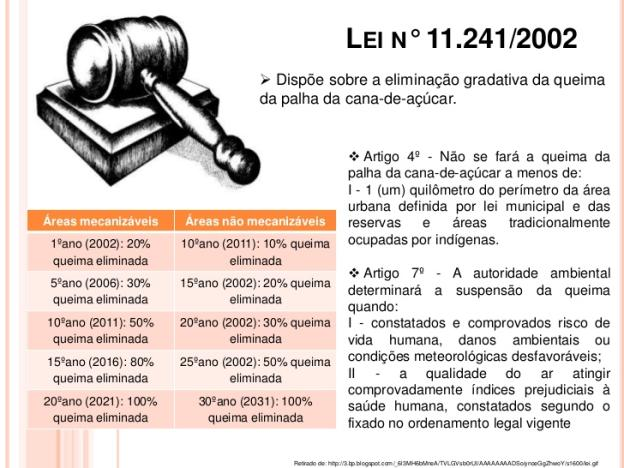

Lei sobre o ato da queimar a cana
No Estado de São Paulo, a Lei de N° 11.241/2002 controla a queima da cana-de-açúcar para despalha e instalou um cronograma para que a totalidade dos canavias deixem de serem queimados. A norma exige um planejamento que deve ser entregue anualmente å CETESB (Companhia Ambiental Do Estado De São Paulo), de modo que adequa as áreas de produção ao plano de eliminação de queimadas. O prazo máximo seria 2021, para áreas mecanizáveis e 2031 para áreas não-mecanizáveis. No Protocolo Ambiental assinado entre o Governo do Estado de São Paulo e a UNICA (União da Indústria de Cana-de-Açúcar) em 2007, ocorreu a antecipação dos prazos. No ano de 2014, plantações que estiveram em áreas com declividade de até 12%, não puderam ser queimadas, existendo somente a colheita mecanizada da cana crua. Nas demais áreas, o prazo é até o ano de 2017.
